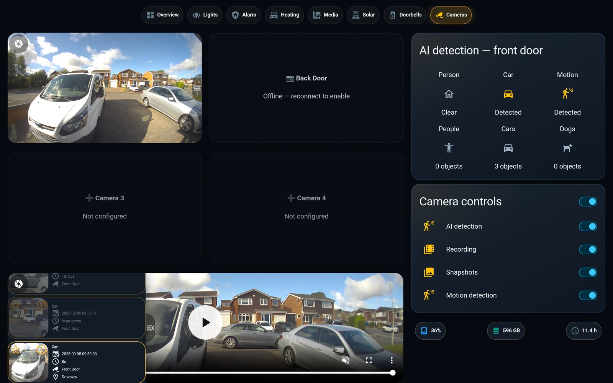
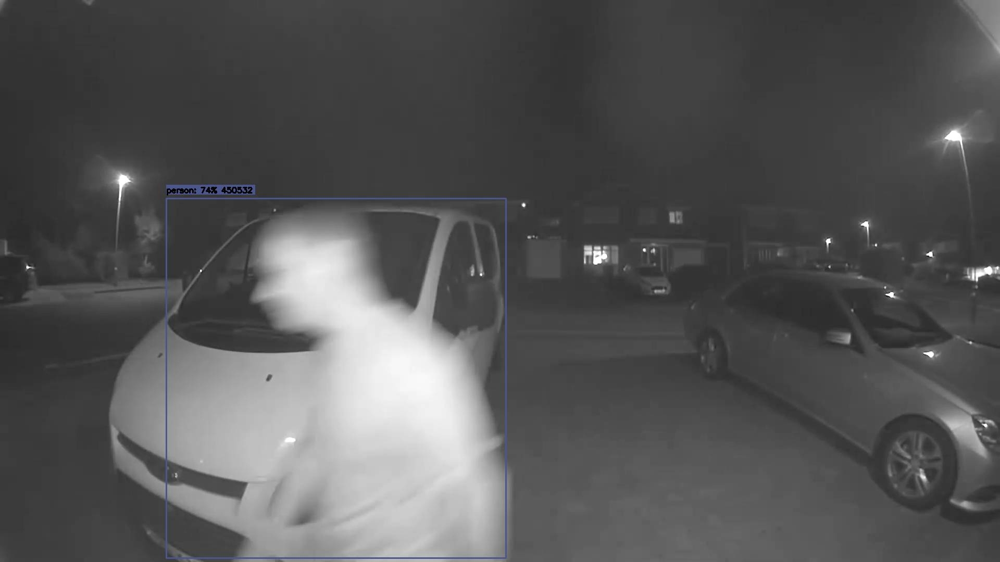
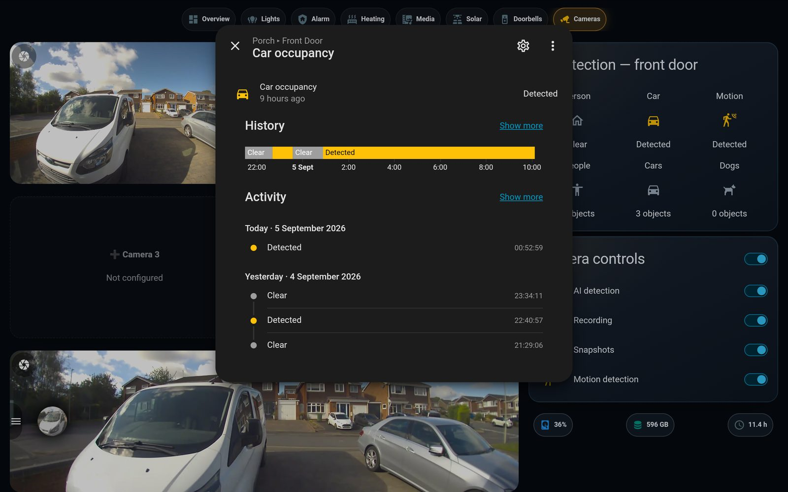
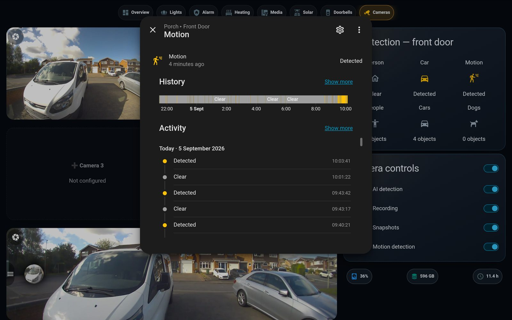
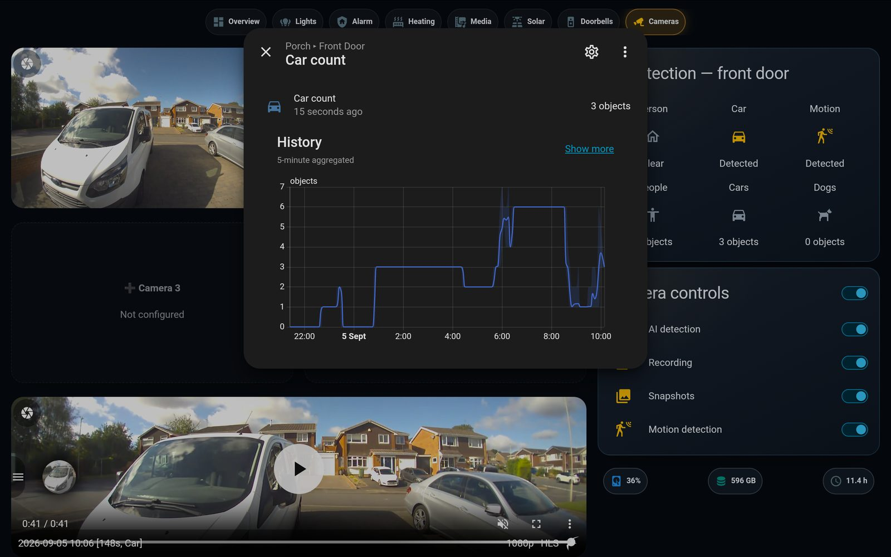
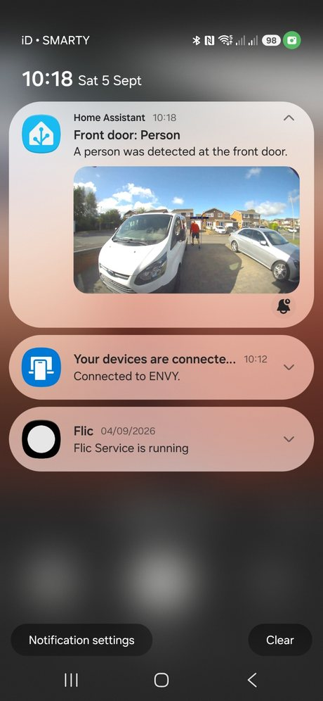

Two existing Ring doorbells, turned into a full local security system: continuous 24/7 recording, GPU-accelerated AI object detection, event rewind, driveway zones and phone alerts with a bounding box on whoever tripped it — all running at home on a spare GPU, streamed straight into the wall panel. Ring wants a monthly fee for recording and snapshots. This pays it nothing.
Without Ring Protect, a Ring doorbell will show you a live view — and nothing else. No recording, no snapshots, no rewind, no history. The moment something happens, it's gone. The community wisdom is "you can't get around it." We took that as a challenge.
The camera.snapshot and record services return "Ring Protect subscription required." No cloud clips unless you pay.
It streams browser-to-Ring-cloud directly and never touches your server, so there's nothing local to grab — normally.
Offline 24/7 recording, event rewind and our own AI detection — on the doorbells we already own, paying nothing.
A bridge pulls the free live view into a standard video stream; a GPU NVR records it around the clock and runs AI object detection on every frame; the results flow into Home Assistant. Each stage runs on the LAN — nothing depends on Ring's cloud beyond the doorbell's own connection.
The free live view — no subscription, no snapshots.
Logs in with your token and republishes the live view as a local RTSP stream, plus motion & ding over MQTT.
GPU hardware-decodes the stream (NVDEC), records 24/7, and runs AI object detection with bounding boxes.
Live view, event player, timeline, zones and phone notifications — right on the wall panel.
The NVR lives on a spare workstation (Ryzen 7 7700, RTX 5070) inside its own Docker stack and its own folder — it never touches the machine's development work, its other containers, or its second drive. The GPU does the heavy lifting (decode + scaling) at around 1% load, leaving enormous headroom for more cameras.
Continuous footage with a scrubbable timeline — jump back to any moment, not just to events.
Person, car, bike, motorbike, dog and cat — each boxed and scored, motion-triggered so it's quiet when the scene is.
A gallery of event clips with time and date; tap one and it plays scaled, with fullscreen and download.
A push notification the instant a person is detected — with the annotated snapshot attached.
Mark your property vs. the public street so a busy road doesn't alert you every few seconds.
Toggle detection, recording, snapshots and motion straight from the dashboard.
Ring resets its devices once a day, which used to freeze the live stream. A watchdog now spots it and auto-recovers the feed within minutes — no dead mornings.
Drive used, free space and NVR uptime at a glance, live from the recorder.
Every object type is counted and logged — tap any tile for its full timeline, or see how many cars passed all day.






The instant the AI sees a person, Home Assistant pushes a notification with the annotated snapshot — no Ring subscription, no cloud. The whole system, working end to end.
A GPU makes continuous AI on a busy, street-facing camera effortless — but it isn't the only way. The bridge-and-record half runs happily on the Raspberry Pi itself; only heavy continuous detection needs more muscle. Pick the tier that fits.
ring-mqtt + Frigate run on the Pi and record 24/7 with rewind, today, for free. Continuous AI on a busy road, though, pins a 4-core Pi — so run detection event-triggered, or pause it and keep the DVR.
A Google Coral stick does real-time object detection in a few milliseconds and offloads it entirely from the Pi's CPU. The cheapest route to always-on AI on modest hardware.
An Intel N100 box with Frigate's OpenVINO detector handles several cameras with AI, sips power, and needs no dedicated GPU. A tidy always-on NVR.
The trick that unlocks all of it — turning Ring's free, subscription-less live view into a real local stream — is identical on every tier. The only question is where the AI runs.
The GPU NVR opens the door to the genuinely clever stuff. On the list:
Name the people it knows — you, family — and flag strangers at the door. The GPU makes it fast.
Read and log plates on the drive; alert on an unfamiliar vehicle.
Bounding boxes drawn on the live dashboard view in real time, not just on saved events.
Speak through the doorbell straight from the wall panel.
A "watch the clip" button right on the phone notification.
The second doorbell back online, recording and detecting alongside the first.